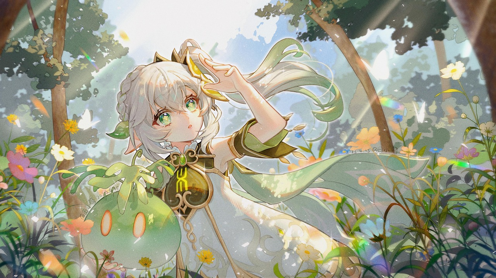

Genshin Impact
Summary
Genshin Impact is a anime-styled rpg game where you play as one of the Traveler siblings, trying to find their other sibling throughout seven unique nations.
Features
- 7 Elements to Utilize in Combat
- Play Through the Archon Quests to Experience the Traveler's Adventure Across the World of Teyvat
- Find Chests And Complete Quests For Rewards
- Co-op Play of Up to 4 Players at Once
- Challenge Difficult Gamemodes Like Spiral Abyss and Imaginarium Theater
- Wish for New Characters and Weapons
- and More!
My Experience
I started Genshin back in 2022 and I have been addicted to the gameplay. All the characters in the game are unique and have their own playstyles, teams, and stories which I find really important in a video game's structure. The game does not get old due to new events and versions being released frequently.
"Every journey has it's final day. Don't rush" - Zhongli